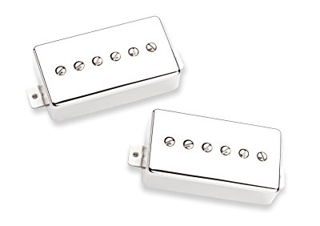
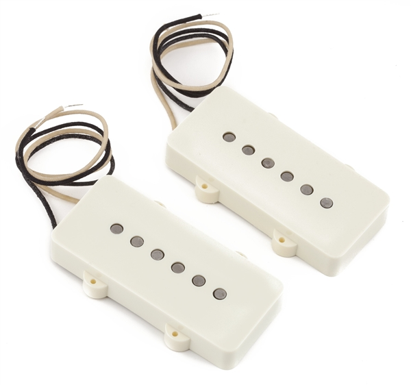
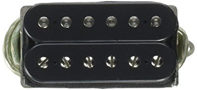

P-90 pickups are of a different nature to humbuckers, despite their fairly similar-looking aesthetic . They only house the one pole piece, meaning P-90s are in essence, single coil pickups. They started out life used in classic Gibson guitars before the arrival of the humbucker in 1955.
Characterised by their gritty, dirty nature, P-90s make for something of a tonal bridge between single coils and humbuckers. They’re like the best of both worlds; the raspy raw sound of a single coil through a driven amp and the chunkier lower frequencies of a humbucker. This is down to a wider, yet shorter bobbin than the average single coil pickup.
P-90s came into their own during the punk movement. The aggressive sound perfectly suited the intense style of music. They found their way into prominent guitars of the time such as the Les Paul Junior. Although not as popular as humbuckers or single coil pickups, they are just as prominent in contemporary music as ever and make it into many modern spec’d guitars.
All P90 pickups feature similar tone but they come in a variety of shapes. This is important, as not all guitars can be fitted with all of these pickups. If you have your eyes set on a particular P90, you have to make sure your guitar is ready for it.
There are three types of P90 pickups:
Soap bar – the original Gibson P90 with a rectangular shape. Mounting screws are in the middle of the pickup, so they don’t fix into your pickguard.
Dog ear – similar to the soap bar design, the dog ear P90s also sport a rectangular shape. However, the mounting screws are not placed in the center of the pickup but on a triangular extension on each end of the pickup. This requires some modifications on many guitars, as these P90s will affix into your pickguard.
Humbucker casing – similar to a standard humbucker design, these P90s are a bit thinner and longer than a traditional humbucker. These pickups require no modifications on your guitar.
If you own a guitar with a P90 pickup, you know that its specific sound is very hard to achieve with any other pickup. It gives you the attack and the twang of a single coil, combined with the beefy mid-low range response, similar to that of a humbucker.
And, with many different manufacturers offering a variety of P90s, it can be hard to make a decision as to which P90 pickup gives the most bang for your buck. To help you make that decision, I handpicked three P90 pickups that will give your guitar that distinctly warm sound.
+ Extraordinary Seymour Duncan build quality
+ Humbucker cover makes it compatible with humbucker guitars
+ Very bright sound
+ Hard metal casing which improves noise reduction
− Doesn’t pair well with a humbucker
− Slightly muddier sound than a classic P90

+ A classic P90 sound – not too muddy, not too bright
+ Original Fender design and feel
+ Waxed finish reduces microphonic feedback
− The vintage cream finish looks out of place, especially on new guitars
− Doesn’t have the strongest punch on overdrive

+ Adjustable hot coil gives you the opportunity to play around with the sound
+ Matches the shape and size of a humbucker
+ Pairing two of these pickups results in a sweet, hollow sound similar to two single coils
− Doesn’t come with a cover, which leaves it exposed
− Doesn’t quite reduce hum like a humbucker
− Impossible to fit on a guitar that doesn’t have humbuckers without modifying the body

All of these pickups have their own advantages and flaws, and each of them is the best possible choice for a certain guitar player. The most important thing when buying a P90 pickup is choosing the one that fits your guitar and playing style perfectly.
Remember, trying them all out is the best way to see their differences. There is no shame in walking into a guitar shop, trying a guitar with a certain pickup, and walking out without buying anything. In fact, this will help you make an informed decision further down the road.